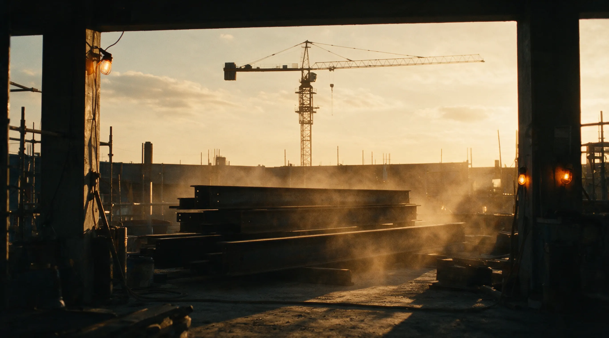

SCENE · JOBSITE — HARD HAT REQUIRED
Jobsite video and photography that documents the build and gives your company something to show for it.
Discuss Your Jobsite
Yes. That is the point. Filming works around the crew, not the other way around.
Minimal. Small footprint, planned positions, no staged stoppages.
Yes, and typically captured on the same visit.
Yes, cut to the formats each platform wants.
Yes, monthly or phase-based scheduling.
Yes, FAA Part 107 certified.
[TODO: real answer: PPE WCM carries vs. site-provided, orientation requirements.]
[TODO: real turnaround times per deliverable type.]
Yes. Files, brand notes, and revision rounds handled directly with them.
I'm Chris McDaniel. Twenty-plus years behind cameras, much of it on working sites: I know where to stand, what PPE to bring, and how to stay out of the crew's way while still getting the shot. [TODO: site-safety training specifics if any.]
FAA PART 107 CERTIFIED · INSURED · OSHA-SITE-READY [TODO confirm]